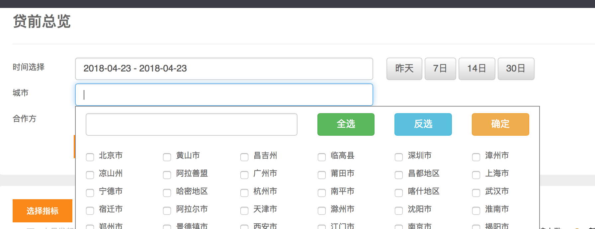
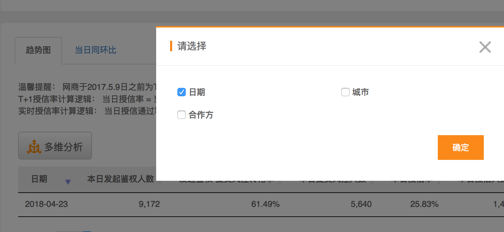
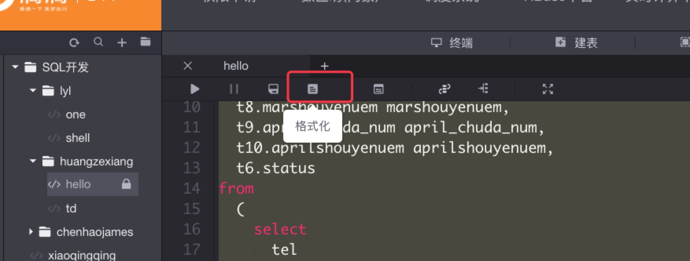

class: middle, inverse, center #HQL必知必会 ### yihaibo 2018.04.24 --- # 大纲 - ##HQL简介 - ##HQL语法 - ##排错 - ##如何写 - ##优化 - ##小技巧 --- ##HQL简介 ``` use manhattan_ods; show create table drip_loan_white_list; CREATE EXTERNAL TABLE `drip_loan_white_list`( `id` bigint COMMENT 'ID', `driver_id` bigint COMMENT '司机ID', `user_name` string COMMENT '用户名') COMMENT '开通滴水贷的司机名单' PARTITIONED BY ( `year` string, `month` string, `day` string) ROW FORMAT SERDE 'org.apache.hadoop.hive.serde2.lazy.LazySimpleSerDe' STORED AS INPUTFORMAT 'org.autonavi.udf.CustomInputFormat' OUTPUTFORMAT 'org.autonavi.udf.CustomHiveOutputFormat' LOCATION 'hdfs:/user/fbi/manhattan_ods/drip_loan_white_list' ``` --- ``` hive> dfs -ls /user/fbi/manhattan_ods/ drip_loan_white_list/2018/04/01; 2018-04-10 15:58 000000_0 2018-04-02 10:19 _SUCCESS 2018-04-17 22:19 xinwang_white_list_20180417.txt ``` ##HiveQL -> Hive(OLAP) + SQL -> MapReduce + HDFS - ###分区是什么，有什么作用 - ###全量表还是增量表 --- # HQL语法 - ###语法概览 - ###查询 - ###聚集函数 - ###分组 - ###子查询 - ###连接 - ###组合 - ###窗口函数 --- # 语法概览 ``` [WITH CommonTableExpression (, CommonTableExpression)*] SELECT [ALL | DISTINCT] select_expr, select_expr, ... FROM table_reference [WHERE where_condition] [GROUP BY col_list] [ORDER BY col_list] [CLUSTER BY col_list | [DISTRIBUTE BY col_list] [SORT BY col_list] ] [LIMIT [offset,] rows] ``` - ####select语句可以是union查询的一部分，或者是另一个查询的子查询 - ####table_reference可以是普通表，视图，join体或子查询 --- #执行顺序 ``` (8)SELECT (9)DISTINCT select_expr (1)FROM [left_table_reference] (3)<join_type> JOIN <right_table_reference> (2)ON <join_condition> (4)WHERE <where_condition> (5)GROUP BY <group_by_list> (6)WITH <CUBE> (7)HAVING <having_condition> (10)ORDER BY <order_by_list> (11)LIMIT <offset,> rows ``` --- #查询 ###真实列，计算列 ``` select count(1), --累计授信次数 count(distinct if(success_time like '2018-04-18%', uid,null)), --当日授信人数 sum(case when success_time like '2018-04-18%' then credit_line else 0 end)/100, --当日授信金额 sum(credit_line)/100 --累计授信金额 from manhattan_ods.ods_loan_credit where concat(year,month,day)='20180418' and product_id='2001' and valid=1 and status=1 ``` --- ##常用操作符与表达式 - ### and or not 逻辑运算符 - ###is null, bewteen and, in, =, <>, !=, like ... ``` hive> select 1 is null, 1 between 1 and 10, '2018-01-01 12:12:12' like '2018-01-01%'; OK _c0 _c1 _c2 false true true ``` - ###if ``` hive> select if(1+1>2,'Y','N'); OK _c0 N ``` --- - ###case when then ``` hive> select case when 1+1>2 then '厉害' when 1+1=2 then '一般' else '失望' end; OK _c0 一般 ``` --- ##常用函数(支持列，列的表达式) - ###数学函数 ####round, floor, ceil ... - ###聚合函数 ####count, sum, max, min, avg, percentile(必须是整数), variance, corr count(*) <=> count(1) count(expr) => expr非NULL的行数 - ###日期函数 ####date_sub, date_add, datediff, to_date, year, month, day, weekofyear - ###coalesce(首次非null值) ``` select coalesce(cityid, -1), coalesce(cityid, cityId, -1); ``` --- ###其它函数 ####concat_ws, length, lower, ltrim, split, cast .... - ###首次支用时间月份 concat_ws('-',substr(first_loan_succ_time,0,7),'01') first_loan_date - ###授信上个月 date_sub(concat(substring(open_time,1,7),'-01'),1) m_time - ###一个月之后 ``` hive> select concat(year('2017-01-02'), lpad(month('2017-01-02')+1,2,0), lpad(day('2017-01-02'),2,0)); 20170202 ``` --- #分组 ``` select funds_channel_id, sum(credit_line)/100 loan_money, --累计授信金额 sum(case when success_time like '2018-04-18%' then credit_line else 0 end)/100 --当日授信金额 from manhattan_ods.ods_loan_credit where concat(year,month,day)='20180418' and product_id='2001' and valid=1 and status=1 group by funds_channel_id having sum(credit_line)/100>power(10,8) order by loan_money desc ``` - 出现group by，select列只能是分组列，或聚合函数 - having子句可选，只能是分组列或聚合函数 - group by(order by)等都支持表达式 --- ##CUBE(立方体) - 维度，指标 - 切片，切块  - 上卷，下钻  --- ``` select city_id, funds_channel_id, count(distinct case when apply_loan_pass_num>0 then uid else null end) cnt --授信人数 from manhattan_dw.dw_loan_credit where concat(year,month,day)=20180423 group by city_id,funds_channel_id with cube order by cnt desc limit 20 city_id funds_channel_id cnt NULL NULL 1457 NULL 3007 1204 NULL 3011 150 NULL 3003 91 21 NULL 72 3 NULL 58 21 3007 57 2 NULL 55 ``` - with rollup - grouping sets --- #子查询(嵌套查询) ``` select * from ( select funds_channel_id, sum(credit_line)/100 loan_money, --累计授信金额 sum(case when success_time like '2018-04-18%' then credit_line else 0 end)/100 --当日授信金额 from manhattan_ods.ods_loan_credit where concat(year,month,day)='20180418' and product_id='2001' and valid=1 and status=1 group by funds_channel_id )t where loan_money>power(10,8) order by loan_money desc ``` --- #连接 ###<font color="red">hive只支持等值连接</font> - ####inner join <=> join 内连接 - ####left outer join 左外连接(右表缺失为NULL) - ####right outer join 右外连接 - ####full outer join 完全外连接 --- ###<font color="red">where语句在连接操作执行后才会执行，不会下推到join操作前</font> ``` select t1.uid, sum(apply-coalesce(repay)) balance from ( select 1 uid, 100 apply union all select 2 uid, 200 apply )t1 left outer join ( select 1 uid, 50 repay, 1 success )t2 on(t1.uid=t2.uid) where t2.success=1 group by t1.uid #uid为2的用户贷款余额呢? uid balance 1 50 ``` --- #组合 - ####union 去重(相当于嵌套层group by) - ####union all 非去重 ``` select 1 uid, 100 apply union select 1 uid, 100 apply union all select 1 uid, 100 apply ``` --- ##窗口函数 每个用户每个资金方最近授信金额 ``` select uid, funds_channel_id, credit_line last_credit_line from ( select uid, funds_channel_id, credit_line, row_number() OVER (partition by uid,funds_channel_id ORDER BY success_time desc) num from manhattan_ods.ods_loan_credit where concat(year,month,day)='20180401' and success_time<='2018-04-01 23:59:59' and product_id=2001 and valid=1 and status=1 ) t1 where num=1 ``` --- ``` select uid, money, row_number() OVER (partition by uid ORDER BY ctime desc) num from ( select 1 uid, 10000 money, '2018-04-02' ctime union all select 1 uid, 20000 money, '2018-04-01' ctime union all select 2 uid, 10000 money, '2018-04-01' ctime )t uid credit_line num 1 10000 1 1 20000 2 2 10000 1 ``` - rank - dense_rank --- - LAG(col,n,DEFAULT) 用于窗口内上第n行值 - LEAD(col,n,DEFAULT) 用于窗口内下第n行值 ``` select uid, money, lag(money,1) over (partition by uid ORDER BY ctime desc) last_money, lead(money,1) over (partition by uid ORDER BY ctime desc) next_money from ( select 1 uid, 10000 money, '2018-04-02' ctime union all select 1 uid, 20000 money, '2018-04-01' ctime union all select 2 uid, 10000 money, '2018-04-01' ctime )t ``` ``` uid money last_money next_money 1 10000 NULL 20000 1 20000 10000 NULL 2 10000 NULL NULL ``` --- - ##参考 https://cwiki.apache.org/confluence/display/Hive/LanguageManual+WindowingAndAnalytics --- #排错 - ##语法错误 - ##逻辑错误 --- ##语法错误 ###<font color="red">cannot recognize input near....</font> ``` #line 1:29cannot recognize input near 'from' 'manhattan_dw' '.' in selection target select uid,funds_channel_id, from manhattan_dw.dw_loan_credit where concat(year,month,day)=20180417 limit 2; ``` ``` #line 6:30 cannot recognize input near '3007' '3011' ')' in expression specification select uid, funds_channel_id from manhattan_dw.dw_loan_credit where concat(year,month,day)=20180401 and funds_channel_id in (3001，3007，3011) limit 10 ``` --- ##语法错误 ###<font color="red">Expression not in GROUP BY key</font> ``` #Expression not in GROUP BY key 'city_id' select city_id, sum(apply_loan_pass_money) from manhattan_dw.dw_loan_credit where concat(year,month,day)='20180401' group by case when city_id is null then -1 else city_id end ``` - ####如果有group by语句，select的字段要么在group by中，要么在聚合函数sum，avg中 - ####如果group by包含表达式，select的字段必须包含相同group by表达式 --- ##语法错误 ###<font color="red">Both left and right aliases encountered in JOIN 'uid'</font> ``` select * from ( select 1 uid, 20 age )t1 left outer join ( select 2 uid, 1 sex )t2 on(t1.uid<t2.uid) ``` HIVE不支持不等值连接 --- ##其它常见语法错误 - ###<font color="red">character ' ' not supported here</font> ###多了空格 - ###<font color="red">Invalid table alias or column reference</font> ###表或列名错误 - ###<font color="red">missing EOF at</font> ###少了空格等 - ###<font color="red">mismatched input '<EOF>' expecting KW_END</font> ###case when语句不完整，如缺少end --- #如何应对语法错误 - ###不畏缩，慢慢就成常客了 - ###查看提示，看提示行号附近是否字符有误，多了逗号，中英文是否有问题等 - ###逐句排错，步步为营，缩小范围(过复杂可使用二分法) --- ##逻辑错误 ``` select count(distinct if(loan-repay>0,t1.uid,null)),--在贷人数 sum(loan-repay) --贷款余额 from ( select uid,loan_money_total loan--累计支用本金 from manhattan_dw.dw_loan_loan where concat(year,month,day)='20180401' )t1 left outer join ( select uid, sum(repay_principal) repay --累计还款的本金 from manhattan_dw.dwd_loan_repay_log_detail where concat(year,month,day)='20180401' group by uid )t2 on(t1.uid=t2.uid) ``` --- ###<font color="red">警惕null值，null值比较，null算术运算都为null值</font> ``` spark-sql> select null is null, 1+null, max(null); (NULL IS NULL) (1 + CAST(NULL AS INT)) max(NULL) true NULL NULL ``` ###数据预处理，增加子查询 ``` select count(distinct if(balance>0,t1.uid,null)),--在贷人数 sum(balance) --贷款余额 from ( select t1.uid, coalesce(loan,0)-coalesce(repay,0) balance--贷款余额 from ... on(t1.uid=t2.uid) )t1 ``` --- ###<font color="red">avg != sum/count</font> ``` select count(*), count(distinct age), avg(age), max(age), sum(age) from ( select 2 age union all select null )t ``` ###AVG(),MAX(),SUM()等聚合函数忽略列值为NULL的行 --- #好的习惯 - ###确定全量表还是增量表 - ###明确表主键，join时避免类笛卡尔积，可防御性group by - ###逻辑清晰简单，宁可多加子查询 - ###了解数据分布，做好异常值处理 --- #如何写 - 确定维度，指标 - 找数据源 - 确定主表 - 关联，将抽取所需维度，基础指标 - 嵌套一层子查询，汇总所有所需数据，异常数据处理 - 分组，通过计算表达式计算指标 --- #优化 参考 --- #小技巧 - 模糊查表 ``` hive> show tables like '*spider*'; OK tab_name spider_bmd ``` - 执行命令行 ``` hive -e "" > 1.txt hive -f file > 1.txt spark-sql -e "" > 1.txt spark-sql -f file > 1.txt ``` --- 区别:行数限制，<font color="red">转义</font>区别 ``` hive> select '18210097944' regexp '^\\d+$'; OK _c0 true ``` ``` hive -e " select '18210097944' regexp '^\\\\d+$'; " ``` - 打算回去了，可任务还没跑完??? ``` hive -e " select '18210097944' regexp '^\\\\d+$'; " > r.txt ``` ``` nohup sh r.sh & ``` --- - 防止串列，mysql \G效果 ``` data-ide@nm-vip1-sf-6f15a-0 workspace]$ beeline > !set outputformat vertical > select driver_id, user_name from manhattan_ods.drip_loan_white_list limit 1; driver_id 562950054533128 user_name 王建东 ``` - 导出为csv格式 ``` beeline --outputformat=csv2 -e " use manhattan_dw; select * from dw_v_driver_omega_base where concat(year,month,day)=20180401 limit 1000 " > rr.csv ``` --- - SQL格式化  --- - 数据上传  --- - 编辑器推荐(sublime text) 解决编码问题，解决hive代码由于有tab导致自动提示 Preferences-> Setting-User ``` { "expand_tabs_on_save": true, "font_size": 15, "tab_size": 4, "translate_tabs_to_spaces": true } ``` --- class: center, middle, inverse # 谢谢大家 #Q&A